Boîte, Seoul
written by artguide.team@gmail.com
photo by ArtGuide Team / Lee Hyunseok
poster design by Borui Zhang
photo by ArtGuide Team / Lee Hyunseok
poster design by Borui Zhang
PAAI is an artist-led research collective that explores Asian aesthetics by bridging ancient philosophies and contemporary practices.
This exhibition brings together six artists—Phidia Kang, Kim Hyunho, Na Sun, Park Seongsu, Lee Younjin, and Lim Jihyun— who delve into themes such as Womanist art history, East Asian cosmology, embodiment in painting theory, hybridity, and spiritual time. Through their work, they reconnect fragmented pasts with the present and future.
This exhibition brings together six artists—Phidia Kang, Kim Hyunho, Na Sun, Park Seongsu, Lee Younjin, and Lim Jihyun— who delve into themes such as Womanist art history, East Asian cosmology, embodiment in painting theory, hybridity, and spiritual time. Through their work, they reconnect fragmented pasts with the present and future.

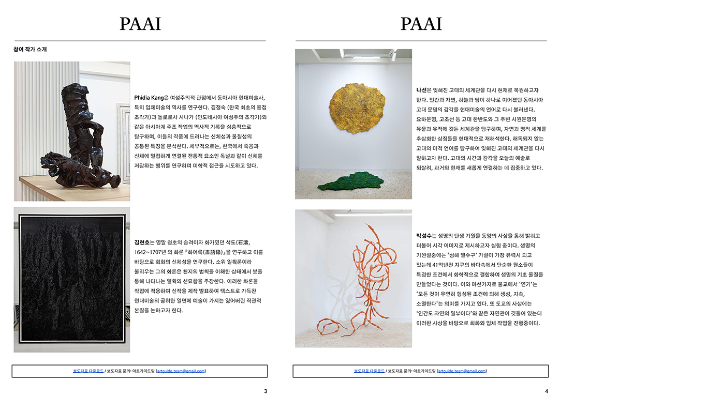
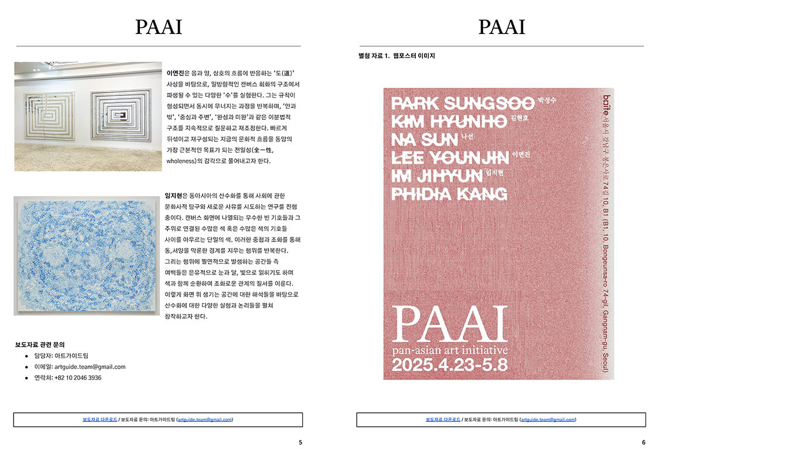
Mold Making Feb 08 - Feb 10, 2023
Forum Gallery
39221 Woodward Ave, Bloomfield Hills, MI, USA
Group exhibition including work of:
Daeun(Phidia) Kang, Jaeyeon Park, Miku Saeki, Reeha Lim, Zou Chen.
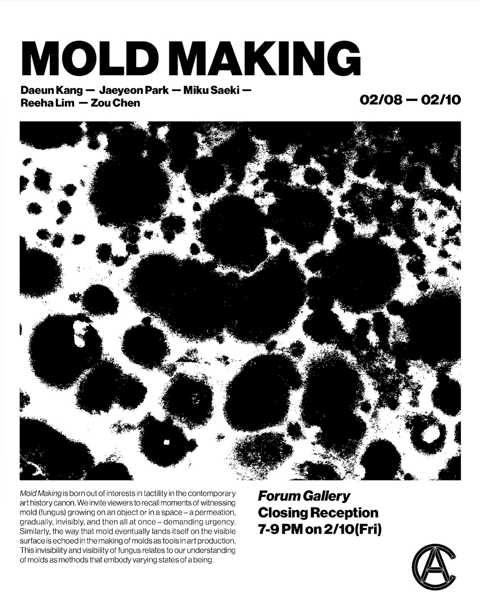


photo index
1. exhibition poster card
2. work by Kang(left), Saeki (right wall), and Chen (ceiling)
3. work by Lim(left), Park (right), and Chen (ceiling)
4. work by Chen (ceiling) and Lim (right)
poster design by Mason Goodlsby
photos by Jaeyeon Park
1. exhibition poster card
2. work by Kang(left), Saeki (right wall), and Chen (ceiling)
3. work by Lim(left), Park (right), and Chen (ceiling)
4. work by Chen (ceiling) and Lim (right)
poster design by Mason Goodlsby
photos by Jaeyeon Park
Clouded: Korean Diaspora Aug 18 - Nov 10, 2017
Mason Fine Art Gallery
415 Plaster Ave NE, Atlanta, GA, USA
Living in a world where we are all simultaneously connected and disconnected from each other... (중략) ...
“Clouded” is a reference to traditional Korean folklore, where clouds were the embodiment of all things
ideal; symbolic of enlightenment. This is what Clouded seeks to address. As we become rapidly more and more connected, there is a sense of awkwardness and disconnection that comes from this mutation of ideas and cultures, and from a lack of physical interaction.


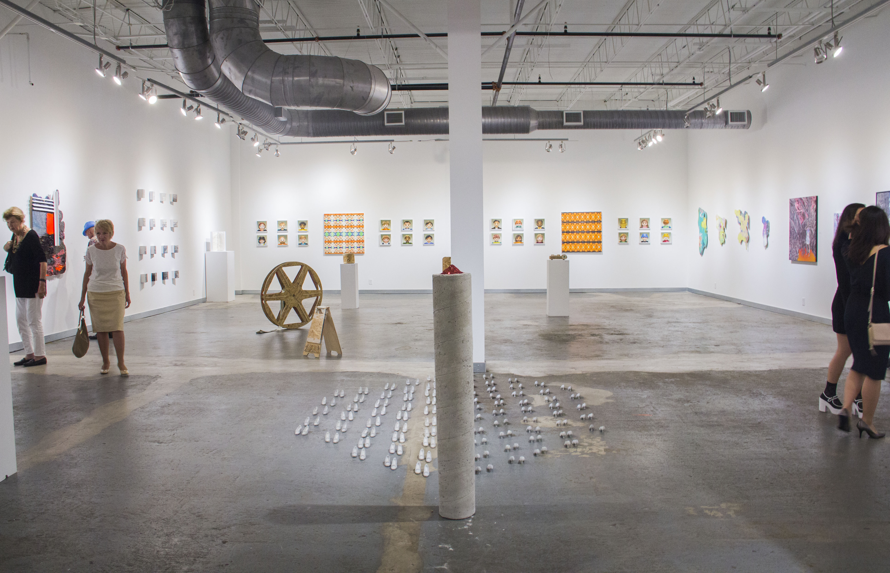
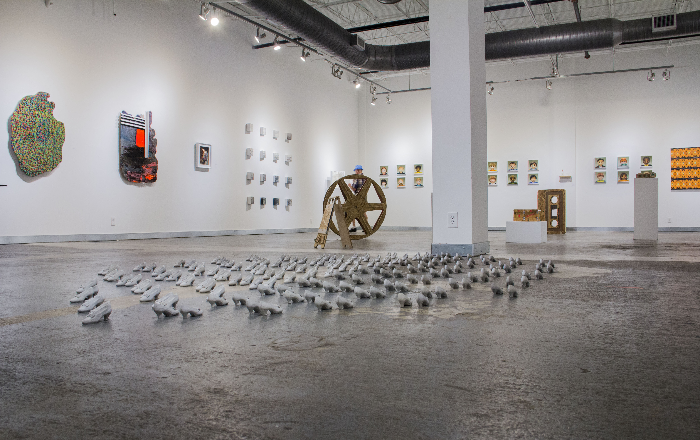
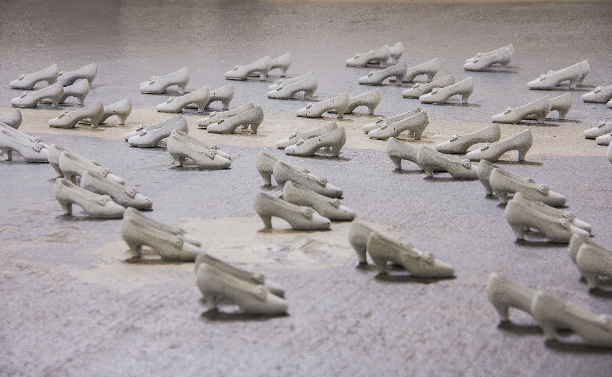
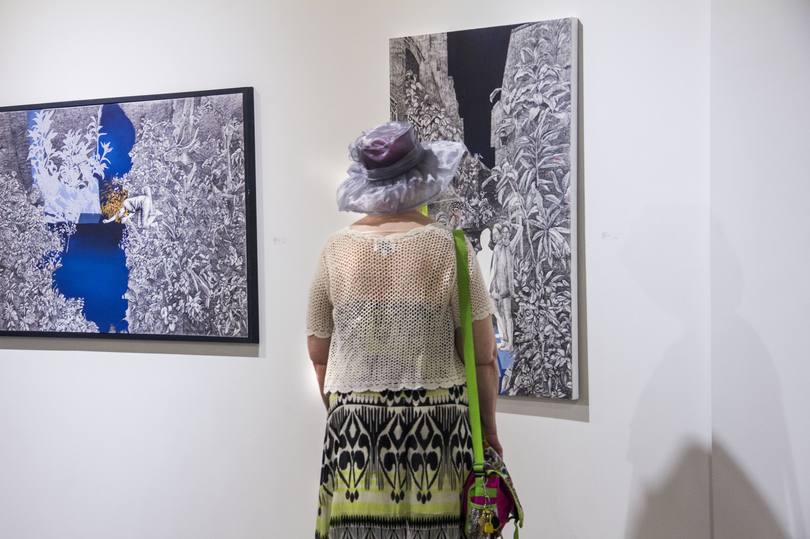
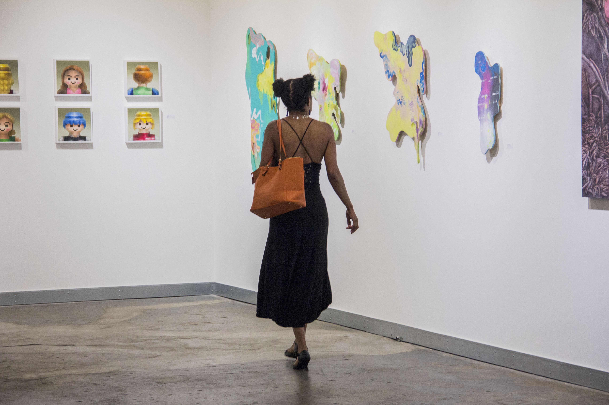
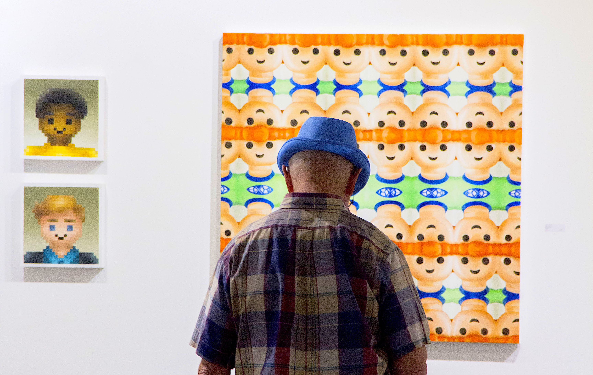
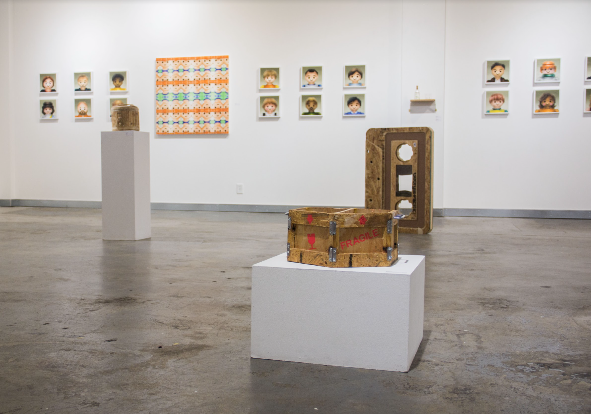

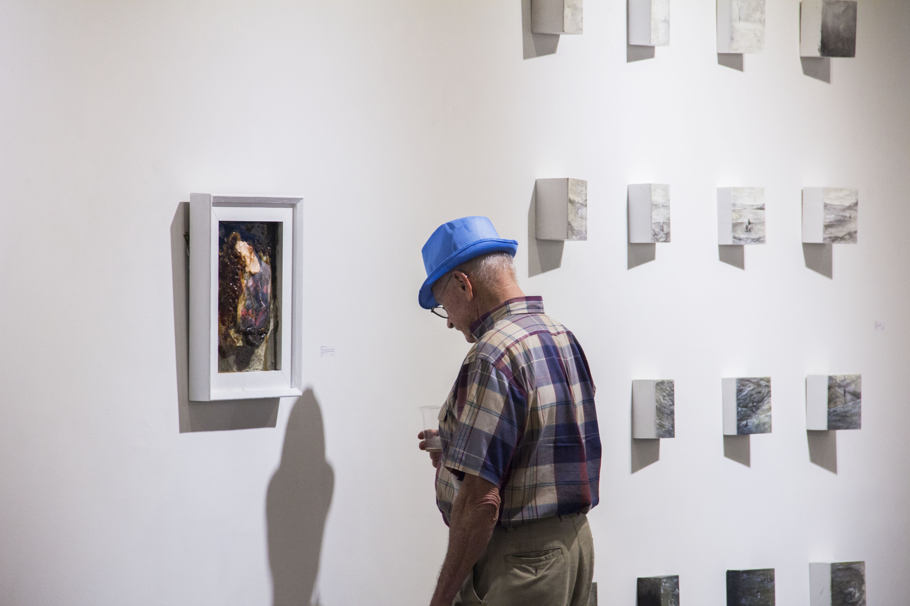
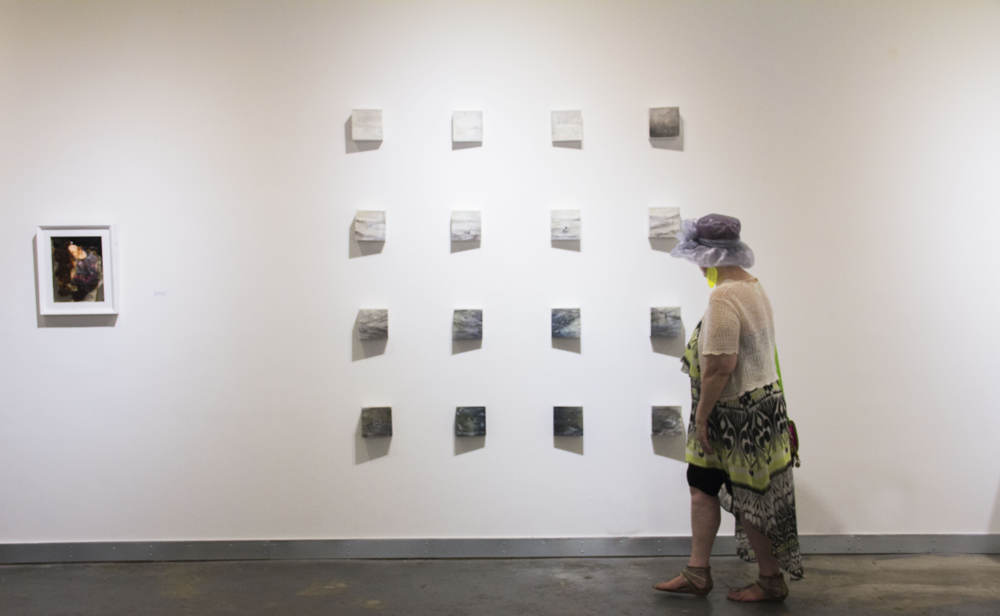
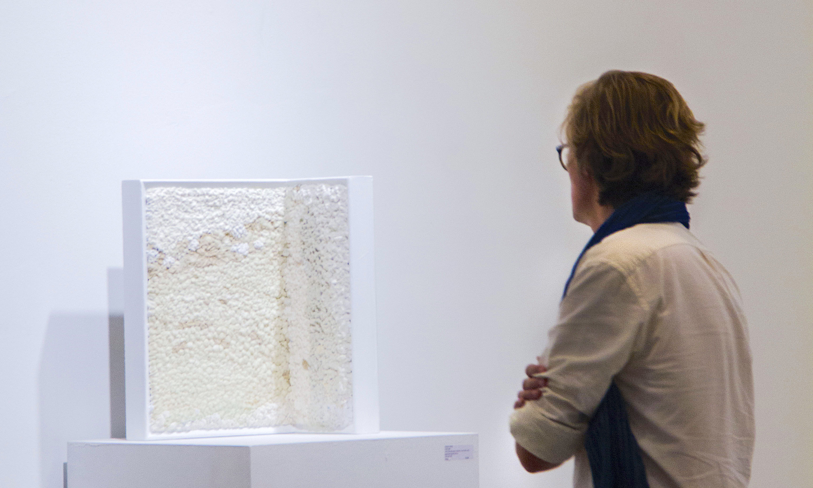
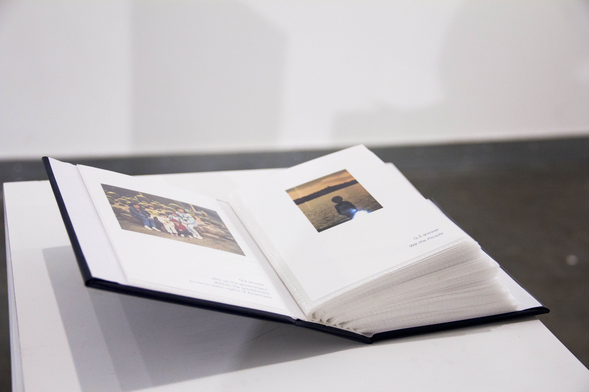
photo index
1-2. exhibition poster card / 3-4. exhibition view / 5. work by Kaye Lee Patton / 6. work by Hwahyun Kim
7. work by Amberly Hood / 8. work by Inkyeong Baek / 9-10. work by Inkyeong Baek and Daesup Song
11-13. work by Phidia Kang (Daeun) / 14. work by Kaye Lee Patton
photos by Ana Milena Bojanini
1-2. exhibition poster card / 3-4. exhibition view / 5. work by Kaye Lee Patton / 6. work by Hwahyun Kim
7. work by Amberly Hood / 8. work by Inkyeong Baek / 9-10. work by Inkyeong Baek and Daesup Song
11-13. work by Phidia Kang (Daeun) / 14. work by Kaye Lee Patton
photos by Ana Milena Bojanini